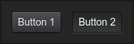
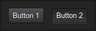

A simple component that can be "pressed" to trigger things.
Example:
const lightDesk = require('@synesthesia-project/light-desk');// ...const button1 = new lightDesk.Button('Button 1');button1.addListener(() => console.log('Button 1 Pressed'));group.addChild(button1);const button2 = new lightDesk.Button('Button 2');button2.addListener(() => console.log('Button 2 Pressed'));group.addChild(button2);
Preview:

Generated using TypeDoc
A simple component that can be "pressed" to trigger things.
Example:
Preview:
